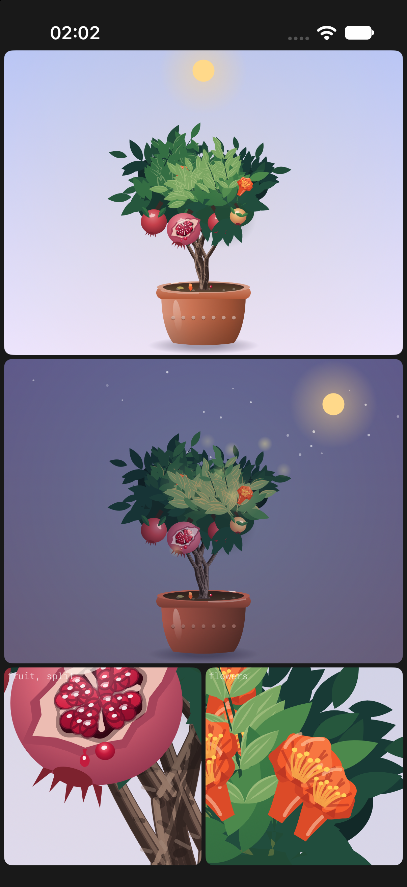
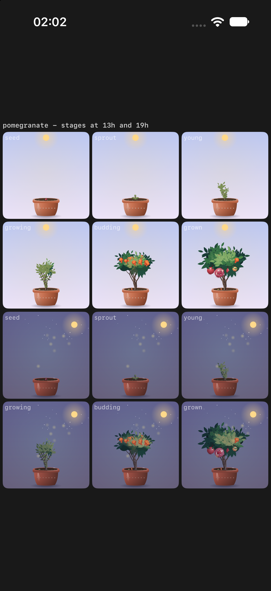
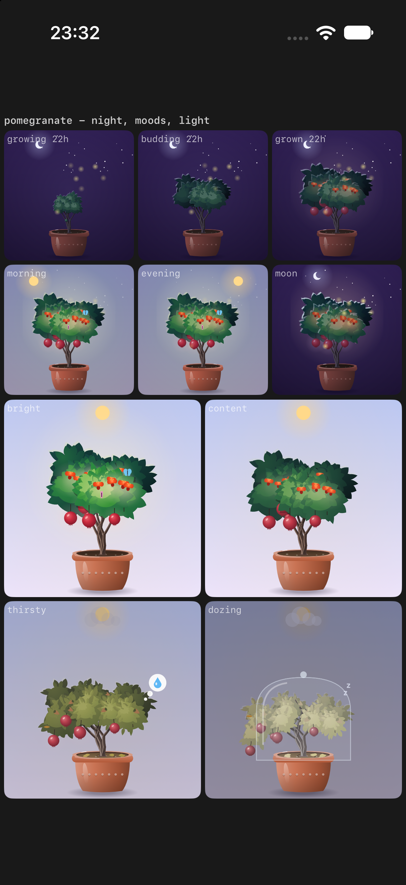
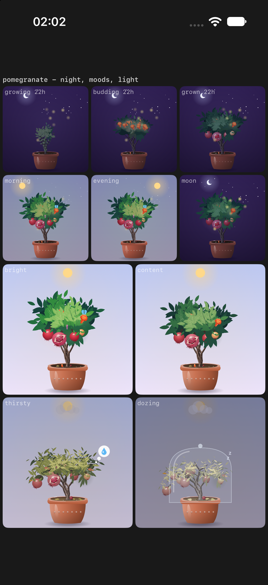
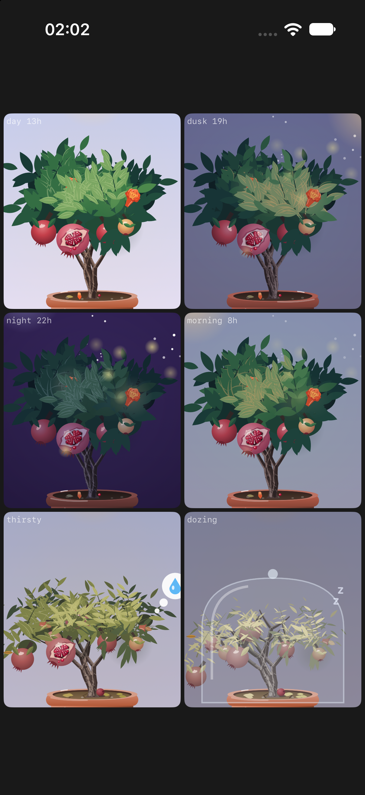
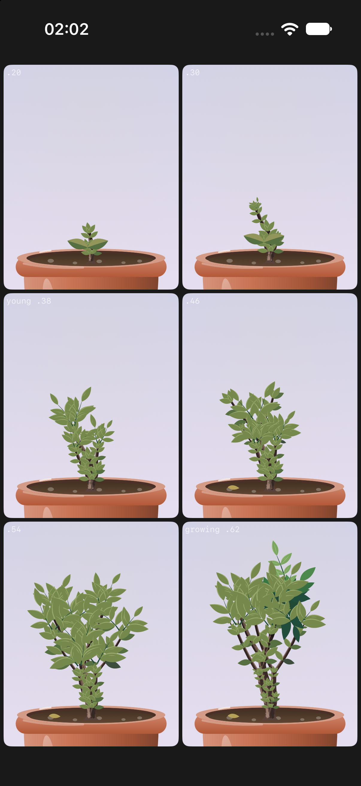
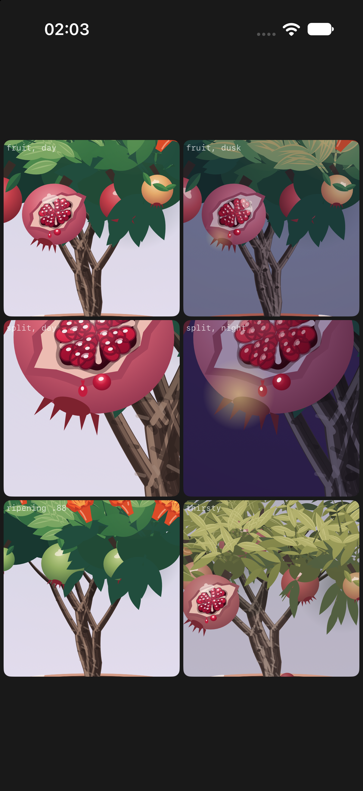
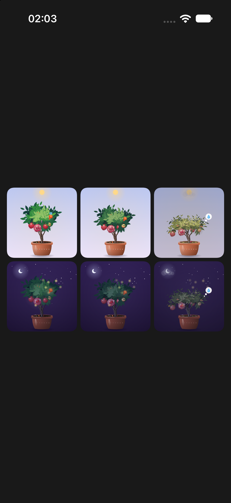

Each row is one view of the same tree, left to right: the shared canopy painter (before), the first hero pass (v1) and round two (v2). Redraw cost on the simulator, alternating runs: v1 recorded in 1.46 ms and held the four-tree stress page at 32 frames per window; v2 records in 0.72 ms and holds 42, against the old painter's 0.68 ms and 50.
Close-up: day and dusk at card size, fruit and flowers
Beforev1

v2: fruit nested in the leaves, the cutaway, dappled crown
Stages
Beforev1: young is a column of tufts

v2: young is a little vase of three canes
Night and moods

Beforev1

v2
v2 close up

The grown crown: day, dusk, night, morning, thirsty, dozing

.20 to .62, enlarged

Fruit in the foliage, and the split one

At the shop's size, day and night, bright, content, thirsty